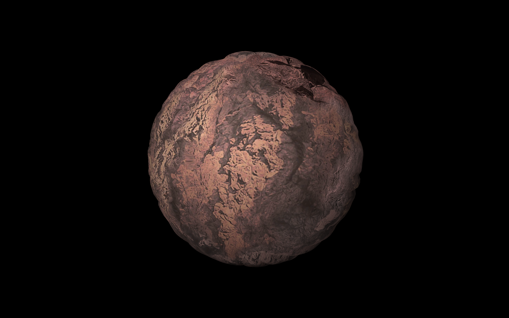

Description:
I started out by adding noise to a sphere representation of a planet to make its surface interesting. First I calculated perlin noise based on the vertex's x and z positions. Then I added that noise factor to the vertex position along the vertex normal. After I completed that, I decided to also implement simplex noise so I could compare the two. After researching, I wanted to play around with frequency, octaves, and an exponential function, so I implemented that and allowed the numbers used to be controlled by the keyboard.
Next I decided I wanted to be able to land on the planet, so I created a 300 vertex by 300 vertex quad to create terrain with. I followed the same process as before, but using x and y instead of x and z to calculate noise. And since the normal of each vertex was just up in y, the noise factor only got added in the y direction, as intended. I also decided to add in water below a certain height to add interest to the scene.